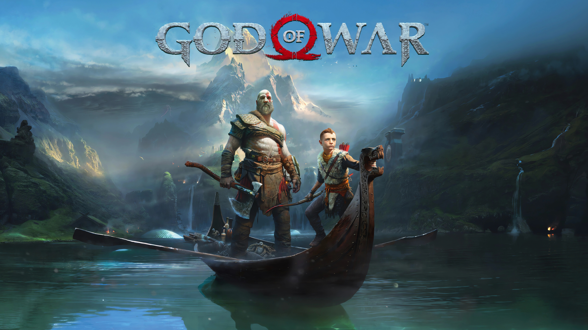
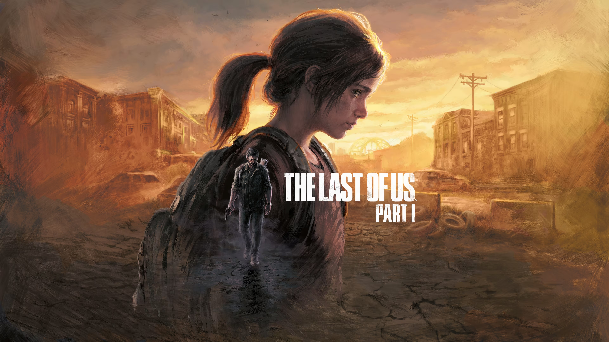
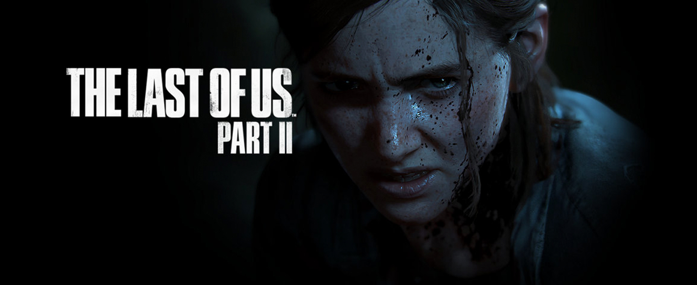
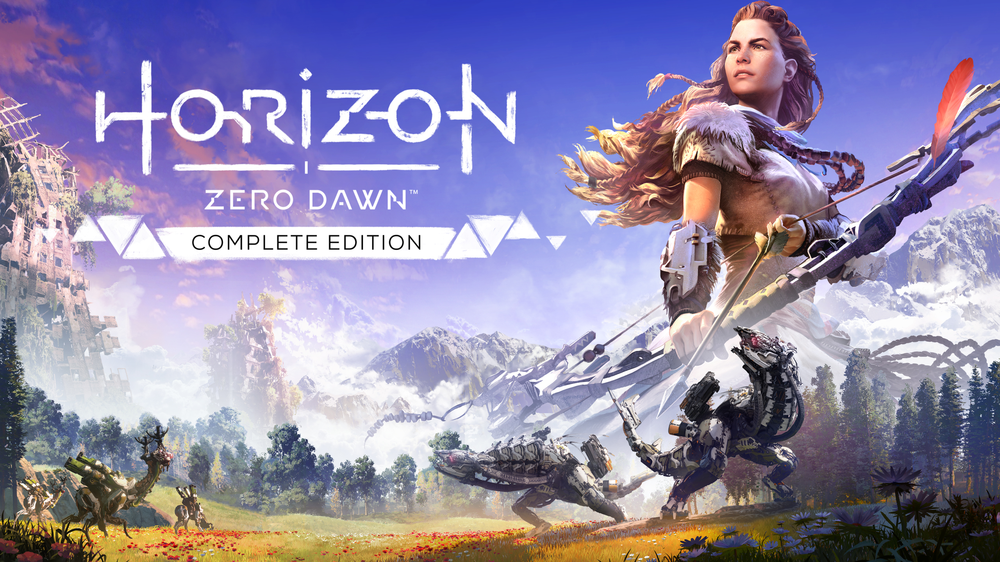
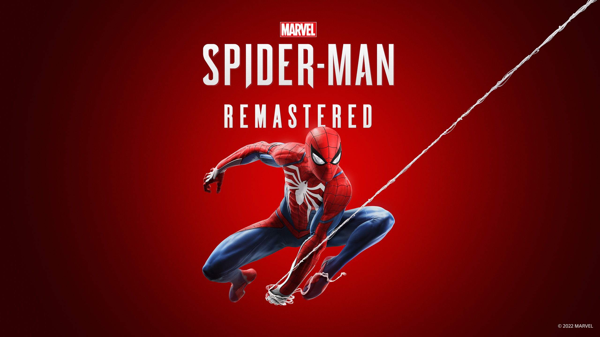
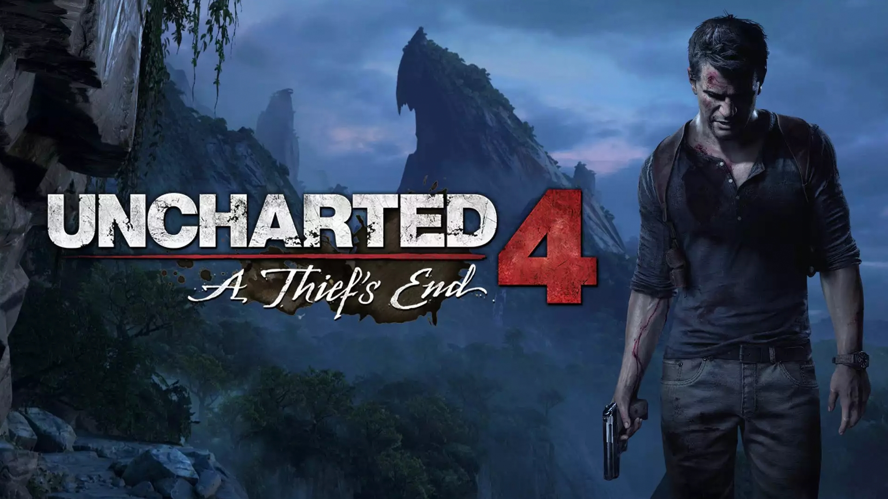

Kratos e seu filho Atreus se aventuram na brutal região nórdica para cumprir uma missão profundamente pessoal.


The Last of Us é uma aclamada franquia que se passa em um mundo pós-apocalíptico devastado
por uma mutação do fungo Cordyceps, que transforma humanos em criaturas agressivas

Em um mundo tribal primitivo onde máquinas estranhas, monstruosas e animalescas vagam pelo deserto, uma jovem guerreira corajosa parte em uma missão
para descobrir a verdade sobre sua origem misteriosa e o estado em que o mundo se encontra.

Em Marvel's Spider-Man, Peter Parker é um herói experiente que, após 8 anos combatendo o crime em Nova Iorque, precisa equilibrar sua vida pessoal com a
ameaça do Senhor Negativo.A situação escala quando o vilão libera um vírus mortal na cidade, forçando o herói a salvar os moradores e lidar com reviravoltas trágicas.

O caçador de tesouros aposentado Nathan Drake é forçado a voltar à ativa quando seu irmão, Sam, ressurge pedindo ajuda.
Eles partem em uma jornada global para encontrar a utopia pirata de Libertalia e a lendária fortuna do capitão Henry Avery.